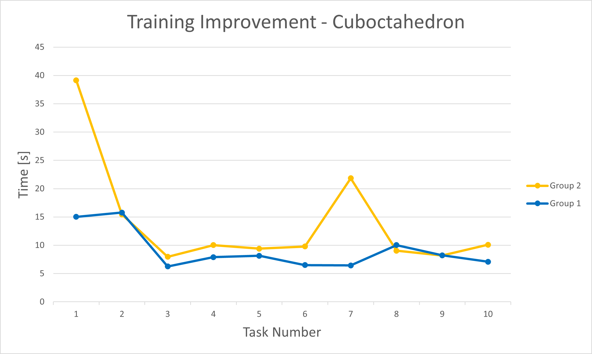
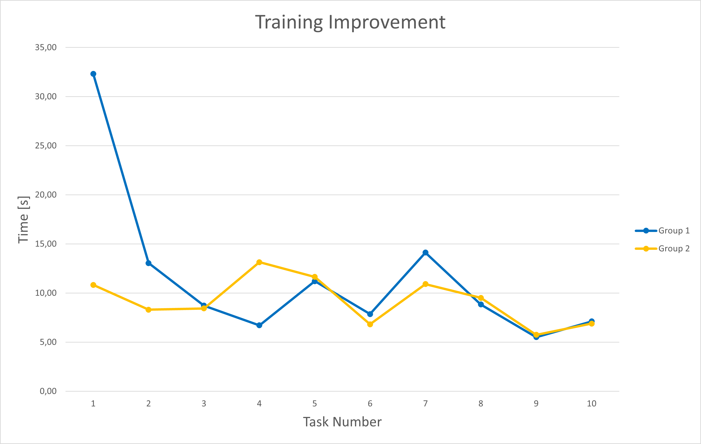
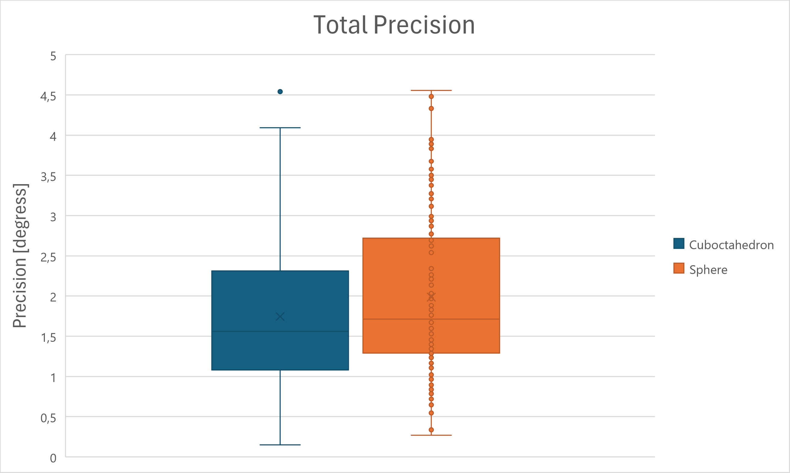
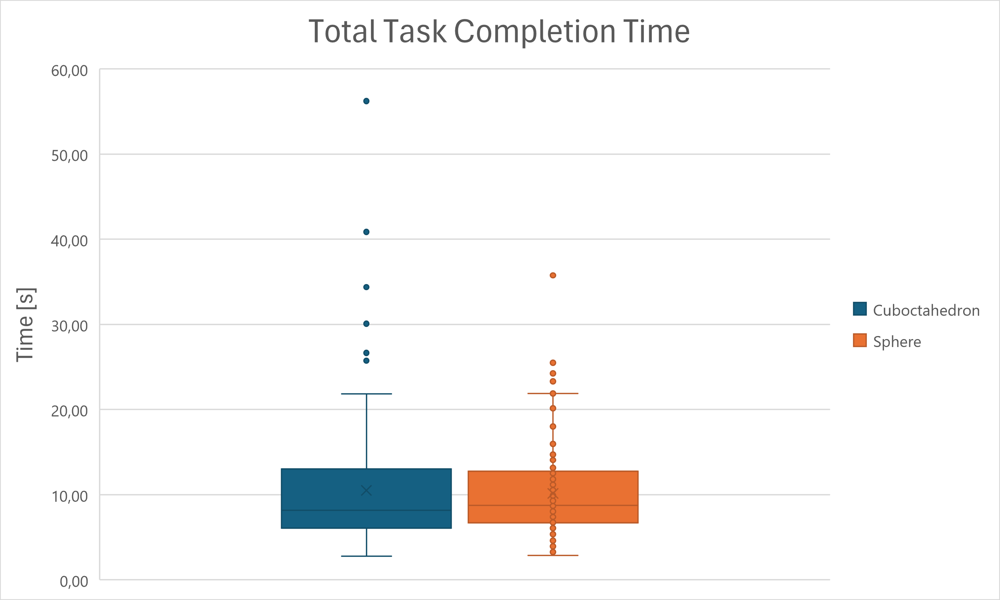
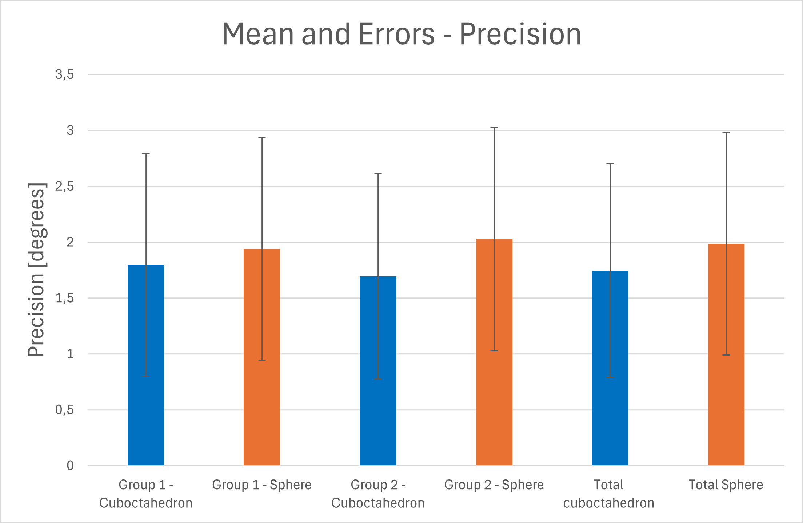
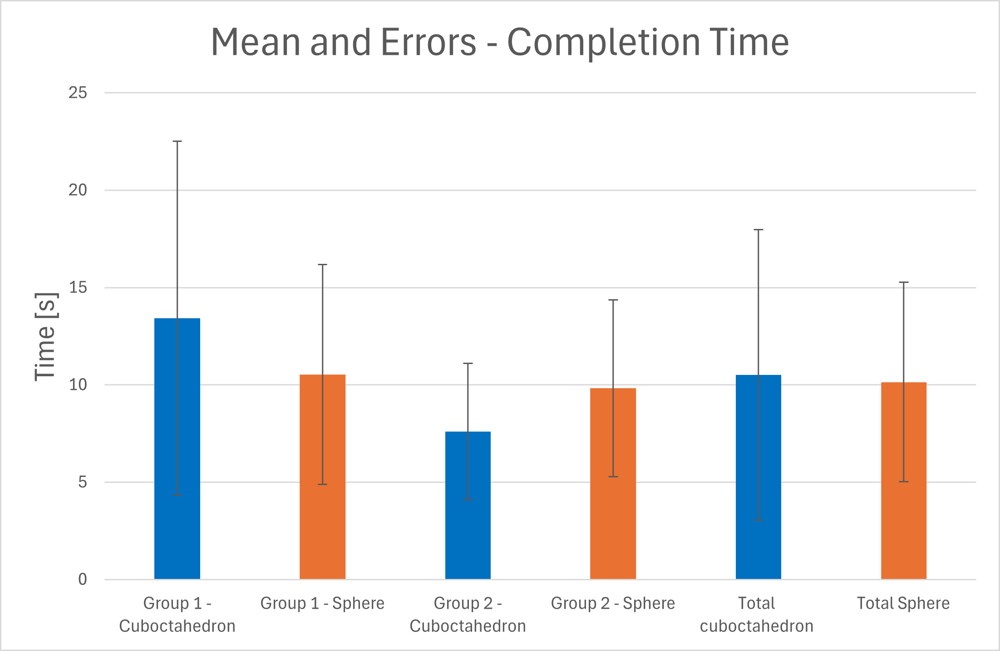
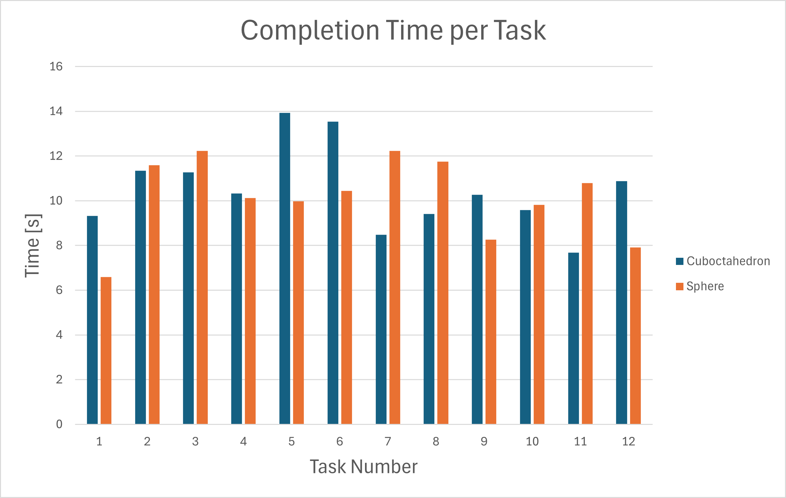
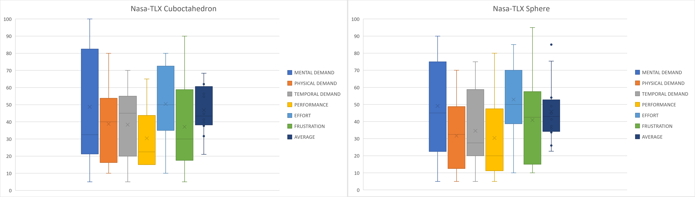
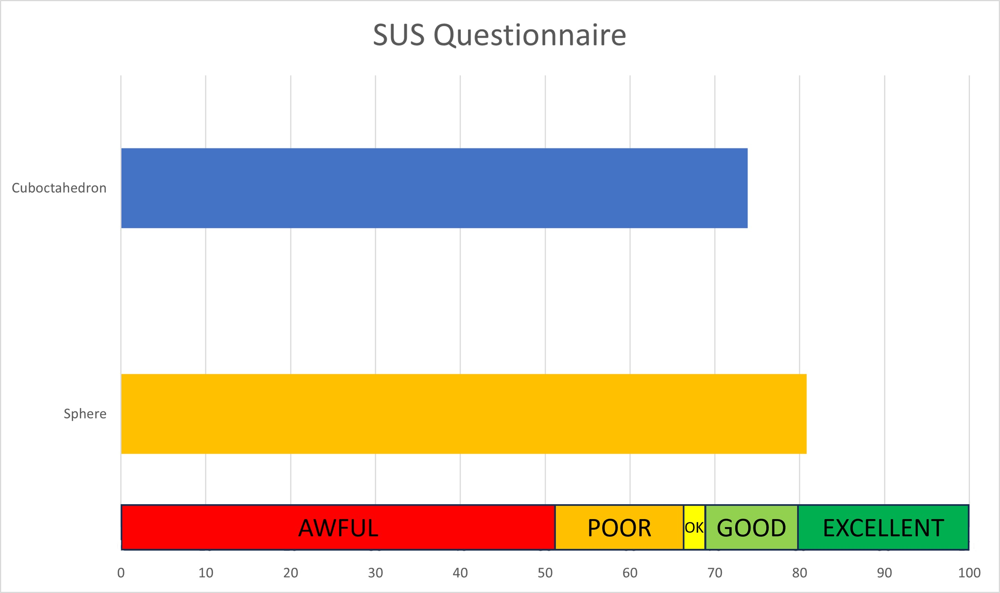

TUI for 3D Rotation
By: Alessio Masi & Jonathan Breitenthaler
Introduction
In environments such as CAD, the object to be designed has to be rotated extensively during the creative process, which can be tedious with a standard input device such as a computer mouse. To address this problem, various approaches have been taken such as computer mouses specifically designed for CAD projects or touch displays. A solution we were especially interested in was a separate tangible user interface to be used to rotate the object in design. Technology for this kind of interface already exists and studies have proven it to be eligible (see section Related Work), however we noticed that the shape of the TUI was never questioned. In the papers described in the Related Work section we saw different shapes used for this purpose, which led us to our goal to find the most suiting shape for a tangible user interface used to rotate 3D objects. This optimal shape should be operable one-handed as to limit fatigue and increase efficiency while using the interface alongside a keyboard and mouse. The constraints for this shape therefore are:
- Comfortable fit for one hand
- Easy to rotate
- Placeable on table
Related Work
There is some related work concerning the topic of TUIs for 3D rotation, however no papers were found on the topic of the shape of such objects specifically. Especially pioneering for us was a paper by Besancon et al. [1] which conducted a study comparing three different input methods for a 3D virtual environment. They evaluated the performance of touch-based, mouse-based and tangible interaction. Their results aligned with their hypothesis of the tangible interaction being faster than the touch-based, which in turn was faster than the mouse-based interaction. The three different interactions only differed in terms of time, in terms of precision however they were very similar. Inspiring for us was the experimental setup, using a docking task to evaluate performance and precision as well as the shape they used for the tangible interaction. They did not clarify why they used the shape of a cuboctahedron, but as it suited our criteria we took it as an inspiration for one of our shapes. Sheridan and Kortuem [2] base their design of different cubes on the Gibson concept of affordance. They study cubes in different sizes and materials to be used as a physical interface for ubiquitous environments and test them for different types of movements, among them a couple movements of interest to us: rotation and translation. The cube as a shape for similiar kinds of interaction is also used in other papers e.g. by Abdelmohsen and Do [3] or Ferscha and Vogl [4].
Approach
The approach we propose to find the best shape to solve the question we asked ourselves will be discussed in the following section, providing also insights on the implementation we designed.
The first step we did in order to start our experiment was to, define the three shapes we wanted to test. We decided to use the shape of a cube, a cuboctahedron and a sphere. The cube and the cuboctahedron were chosen because of their use in the papers described in the Related Work section. The sphere was chosen because it is a shape that is easy to rotate and we wanted to see if it would be a good shape for our purpose.
Before starting the real task,we decided to do a preliminary study in order to have only two shapes left to test in the real experiment. The preliminary study was done on 4 participants and the task was to try to mimic the rotation of an object displayed on the screen by a video of approximately 30 seconds,
without having any visual feedback. To evaluate the three shapes at this stage we based, solely on the feedback provided by the participants, which were required, after performing the same task with all
the three shapes to give a personal classification of the three shapes from the best to the worst. The results of this preliminary study were that the sphere was the best shape, followed by the cuboctahedron and the cube was last and therefore eliminated.
After completing this part we designed the real experiment. Firstly we ask the participant to perform a mental rotational test, in order to understand, when analyzing the results if the results we got are
correlated or not with the ability of a person to identify the correct rotation of an object. After performing this test the task they had to perform consists in a docking task that has to be performed with the two shapes left. This kind of task consists in moving an object from a starting position to a target position. In our case the object is a
block that we built and has a abstract shape and the target position is the same object but rotated. The participants have to move the shape from the starting position to the target position by rotating it. They are required to perform the task with both the shapes and the order in which they perform the task with the two shapes is balanced between the two (to address possible learning that is transferred between the two shapes only in one direction).
In order to help us understand which one is the best shape according to the hypothesis we made, we measured the time needed to complete the task, the number of errors and the distance between the position reached
and the correct one, for what concerns the quantitative data. For the qualitative data we asked the participants to fill two questionnaires, the Nasa-TLX and the SUS.
The experiment was divided in two phases, a training phase and a test phase. The participants always started with a training where they had to perform 10 tasks. During this phase they were helped by giving
visual cues to understand what's the degree of precision which is required to complete the task. To validate a task the user had to press the spacebar when they were close enough to the target rotation, with a maxium
distance from this position of 5 degrees which was imposed by the system. In particular, the object they were rotating was coloured green when they were in the accepted range of precision.
After the training phase they started the test phase, where they had to perform 12 tasks as in the training but without the visual cues. If they tried to validate when they were not in the acceptance range
, that action was marked as an error and they had to continue until being precise enough. After completing the taskset with one shape, they had to fill the
two questionnaires and then they could start the taskset with the other shape. The order in which they performed the taskset with the two shapes was balanced between the two. In total we had 12 participants
split in two groups of 6 people, one group performed the taskset with the sphere first (Group 2) and the other group with the cuboctahedron first (Group 1).
Implementation
In this section we are going to briefly present the implementation of what we have done to perform the experiment.
The first thing we did was to build the models to be used in the preliminary study. We had to build the three shapes and we decided to laser cut both the cuboctahedron and the cube while for the sphere
we used a tennis ball. Regarding the dimension we chose to consider as reference the volume of the tennis ball which is 149 cm^3. We then designed the other two shapes accordingly to have the same volume.
At this stage we didn't have the need to react at the rotation of the object considering the preliminary study was based only on a replication of movements, so we didn't need any sensors to detect the rotation.
After completing the preliminary study we needed to integrate in the two winner shapes the sensors to the detect the rotation. We used an IMU, the Grove - 6-Axis Accelerometer&Gyroscope(BMI088), which is a 6 dof
sensor combining both the measurements of the accelerometer and the gyroscope to detetct more accurately the rotation of the object. The sensor was then connected to an Arduino xiao esp32c3, which was powered by a
battery. Thanks to the WiFi capabilities of the Arduino we were able to put the package of the sensor, Arduino and battery inside the object with no cables coming out of it. The sensor was placed on one side of the
object and firmly attached to it. Each prototype had his own sensor and Arduino.
To get the data from the sensor we used a arudino script to create a WiFi server to which we could connect to get the data. The most important implementation detail is that even if the sensor was calibrated,
we still had a problem of drift, which is common for this kind of sensors, so in order to solve the problem we used a C library called Fusion which implements the algorithm AHRS which acts as a filter to lower
the drift. The library was used in an Arduino script and the filtered results were sent, as quaternions, to the WiFi server.
To display the object and rotate it we implemented a Processing sketch which connects to the WiFi server and gets the data from the sensor in real time. In this sketch is implemented all the logic behind the experiment.
We compute all the metrics we need to evaluate the performance of the participants and we display the object.
Results
In this section we are going to discuss the results we found, analyzing firstly the objective measures we collected and concluding we a brief overview over the subjective questionnaires. As discussed in the section Approach, the first test proposed to the particpants was a mental rotaion test, so we will start analyzing the result we got from this test. The test consists in recognizing, in 12 different cases, one or multiple rotated objects. For each task in the test, the participant is presented with one reference shape and four alternatives among which there is one or more rotations of the reference object. From the results we got in this task we tried to find a correlation with the metrics we were measuring such as the completion time for both the two shapes. We compute a measure of correlation between these two variables which is reported in the table 1.
| Cubocathedron | Sphere | Mental Rotation test | |
|---|---|---|---|
| Cuboctahedron | 1 | N.A. | N.A. |
| Sphere | 0.53 | 1 | N.A. |
| Mental Rotation test | 0.89 | 0.39 | 1 |
The first thing to do when performing a correlation score is to be sure that make senso to compute such a value in our case. We think it was sensful because we wanted to see if there was a relation between the performance in test and in the task. What we can see from the table is that there is an high correlation between having a high score on the test and a high completion time in the case we are using the cuboctahedron. This might be due the fact the shape is uncommon and is not easy for the participants to easily understand the rotation they are performing with this shape. On the other hand, the correlation for the sphere is quite mild, and for the opposite reason this might be because the sphere is a shape we are used to see.
After analyzing the this correlation we will now focus on understand if during the training phase there is any form of learning or not. To understand this we will focus on the picture 1, which represents the two curves for the two shapes divided per group.   Fig 1: Images showing the learning curves for the training phase of the two shapes. Group 1 refers to the particpants that started with the cuboctahedron, while Group 2 refers to those who started with the sphere.
Observing the graphs we can see that the performance of the two shapes after 2/3 tasks is equivalent, meaning that the training necessary to obtain a good level of performance is reached very soon, and after that point what we observe are the results task-realted and no more dependent on the amount of training that one got on a specific shape.
After evaluating the data we collected during the training phase, we can finally move on to the test phase. We will firstly put our attention on undertstanding in general the distribution of the data we collected and the general results we got, concluding the considerations on the test phase with an analysis taskwise rather than participant-wise. In Figure 2, we can see the box plot of the overall data, both for the completion time and the accuracy.  Fig 2: Images reporting the box plots for the two shapes for the two metrics we measured, completion time and precision.
If we look at the box plot for the precision, what we can derivate is that the two shapes are almost equivalent because if we look not only at the lower value reached but also at the distribution of the values (more details on the
variance in the Fig 3), they fall into each other meaning we cannot derive any conclusion from this graph apart from the fact that they can be considered equipararble.
If we now look at the graph on the completion time, on the left, we can see almost the same result as discussed before with the exception that here the difference is even more reduced with respect to the previous case.
  Fig 3: Graphs reporting the average and the standard deviation for the two shapes, and three cases, Group 1, Group 2 and a the overall data for each shape.
What we see in this graph confirms what we have seen in Figure 2, and we can see that actualy the performances over these two shapes are again comparable, and the variance is so high that we cannot conclude anything because we cannot find any consistency in any of the metrics we considered.
After plotting the graphs divided per participant and not being able to find anything that could help on solve the research question that started this experiment, we decided to expand more the insight we had on the data considering an analysis taskwise. Doing an analysis taskwise we wanted to understand whether there are tasks in the tasksets that are more heavy in terms of completion time and precision with respect to the other, and maybe also between the two shapes.  Figure 4: Bar chart representing the completion time of each task averaged on all the participants for the two shapes.From what we see from Figure 4, we noticed that on average the two shapes are equivalent on most of the task, but there are some tasks where one of the two looks better than the other, so we decided to investigate this finding by analyzing the task in terms or distance to be travelled, which means the distance between the starting position and the target position. Performing this analysis we could understand if the difference in completion time is due to the distance to be travelled or not. Furthermore, it could also tell us if there is a relation between the distance travelled and the performance of one shape with respect to the other. The results of this analysis are reported in Table 2.
| Cubocathedron | Time | Distance | Precision |
|---|---|---|---|
| Time | 1 | N.A. | N.A. |
| Distance | -0.45 | 1 | N.A. |
| Precision | 0.11 | 0.04 | 1 |
| Sphere | Time | Distance | Precision |
|---|---|---|---|
| Time | 1 | N.A. | N.A. |
| Distance | -0.52 | 1 | N.A. |
| Precision | 0.24 | 0.23 | 1 |
Analazyng the table, we notice that there is no strong correlation between any of the variables. Focusing on the one of our intereset and we derive that there is a mild connection between the distance to be travelled and the completion time. In particular, when the distance is higher, the completion time tends to decrease and this is true for both the shapes, as we can notice from the negative value of correlation in the second row of the time column. This link is a bit stronger in the case of the sphere but it's still not strong enough to derive any conclusion from it.
After analyzing the objective data we collected, we will now focus on the subjective ones. We asked the participants to fill two questionnaires, the SUS and the Nasa-TLX. The Nasa-TLX is a questionnaire, used to assess the overall workload of a task, which is composed by 6 different dimensions, mental demand, physical demand, temporal demand, performance, effort and frustration. The participant is required to select for each one of this factor a value and then is presented with all the possbile combinations of the factors and is required to select for each pair the one thta was more relevant in the task performed. These values are going to be used later as weights to compute a weighted average of the raw scores.  Figure 5: Box plot representing the results of the Nasa-TLX questionnaire for the two shapes. A lower value indicates a lower workload.
The Figure 5 shows a box plot representing the results of the questionnaire, reporting all the 6 factors and the overall workload for both the shapes. What we can see is that even in this case the two shapes are comparable and there is none which felt heavier in terms of workload, and the fact that the variance is so high cannot give us any more details even looking at the factors indipendently.
The last questionnaire we did was the SUS. It's used to assess the usability of a system and is composed by 10 different sentences, where the users have to select how much they agree/disagree with the sentence proposed, within 5 options.  In this type of questionnaire we decided to use keyowords asssociated with the score to evaluate the results instead of only the numbers. The system has an acceptable score if it's above 68 points and in our case as expressed in Figure 6, we an see both of the shapes are well above this threshold. For the first time, we can also see a gap between the two with the Sphere that had an average score of 80 and the cuboctahedron of 73. Despite the difference is not that big, the general usabilty of the sphere was more appreciated by the participants.Conclusion
References
- Besançon, Lonni, et al. "Mouse, tactile, and tangible input for 3D manipulation." Proceedings of the 2017 CHI conference on human factors in computing systems. 2017.
- Sheridan, Jennifer G., and Gerd Kortuem. "Affordance-based design of physical interfaces for ubiquitous environments." International Symposium on Ubiquitious Computing Systems. Berlin, Heidelberg: Springer Berlin Heidelberg, 2006.
- Abdelmohsen, SHERIF M., and Ellen Yi-Luen Do. "TangiCAD: Tangible interface for manipulating architectural 3D models." Proc. CAADRIA. Vol. 7. 2007.
- Ferscha, Alois, et al. "Physical shortcuts for media remote controls." 2nd International Conference on INtelligent TEchnologies for interactive enterTAINment. 2010.